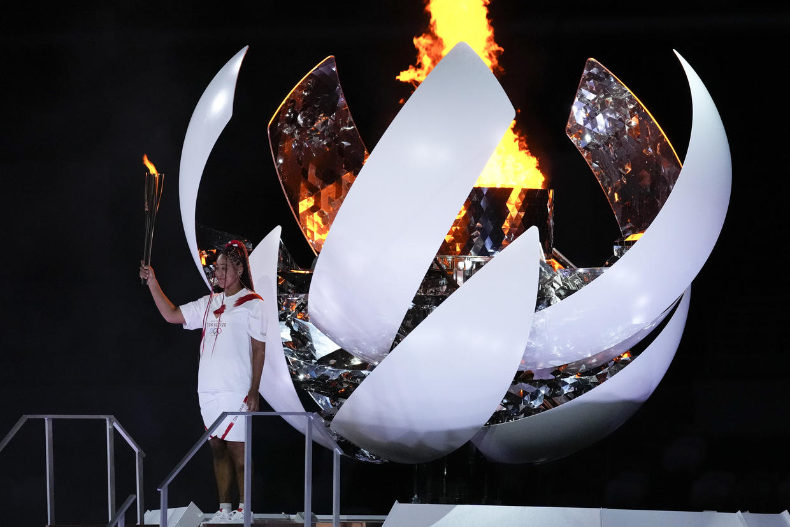
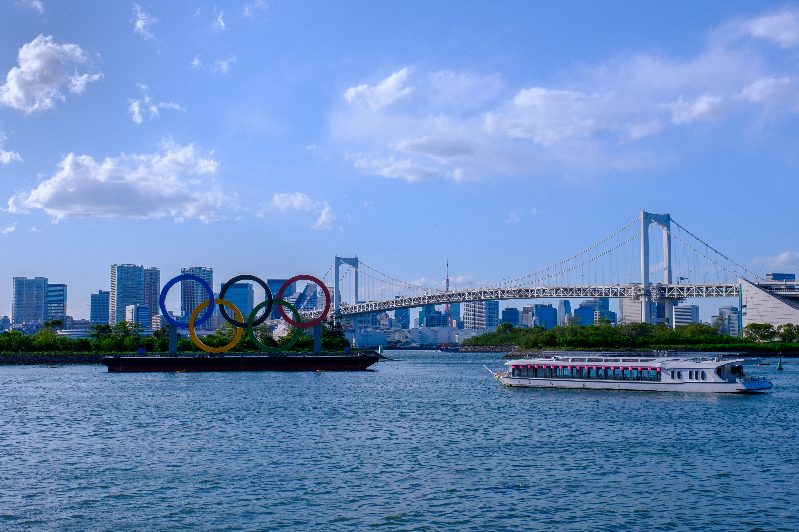
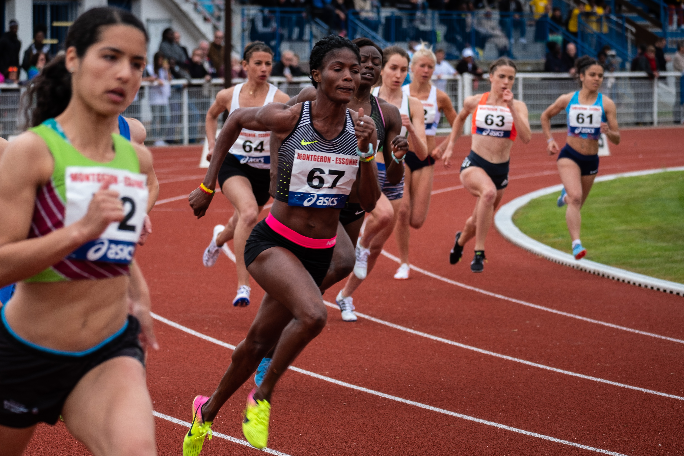
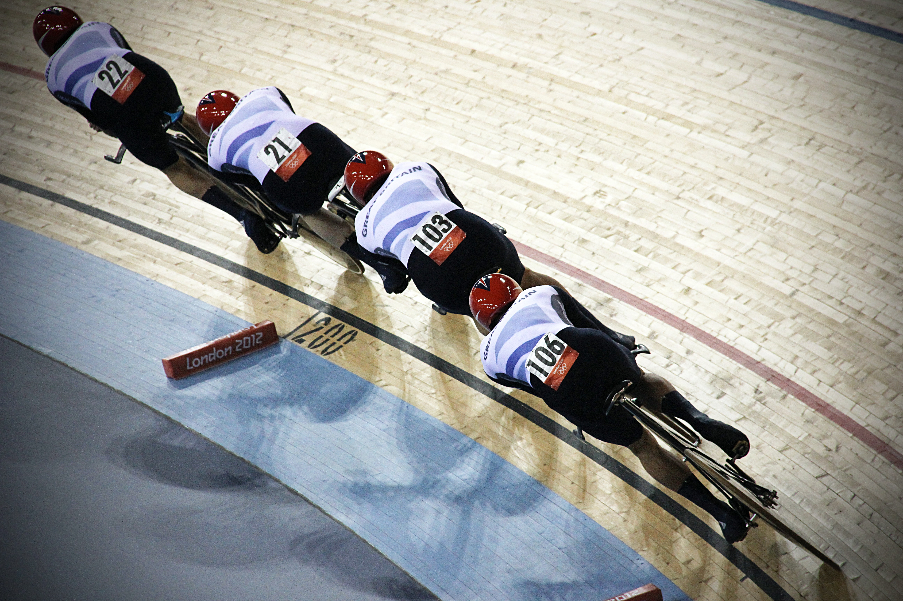
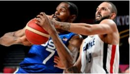
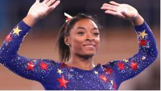

Welcome to BBC.com

Tokyo Olympics day three.
Two of the biggest draws of the Games were in action on Sunday,
with
home favourite
Osaka returning to action for the first time in nearly two months after taking a break
from
tennis to
protect her mental health and Biles taking part in gymnastics qualifying.

Tokyo Olympics day three.
Two of the biggest draws of the Games were in action on
Sunday,
with home
favourite Osaka returning to action for the first time in nearly two months after
taking
a break from
tennis to protect her mental health and Biles taking part in gymnastics qualifying.

Tokyo Olympics day three.
Two of the biggest draws of the Games were in action on
Sunday,
with home
favourite Osaka returning to action for the first time in nearly two months after
taking
a break from
tennis to protect her mental health and Biles taking part in gymnastics qualifying.

TRACK & FIELD.
Among the glamour events of every Summer Olympics, track and
field promises to
provide a stage for dramatic competition and historic performances at the Tokyo
Games.

Results from Cycling at the Tokyo Olympics.
There are five cycling disciplines—Road race,
mountain
bike, BMX
racing, BMX freestyle, and track cycling—and 22 events among those five disciplines.
A
medal will be
handed out each day from July 24 until August 8, with the exception of July 29.
Sport

Shock golds & Osaka returns to action
Ausria's Anna Kiesenhofer and Tunisian teenager Ahmed Hafnaoui win surprise golds on a drama-filled second day at the Tokyo Olympics.
Sport

France end USA's 25-game win streak
The USA's men's basketball team see their 25-game winning streak at the Olypics ended as they are stunned 83-76 by France in their Tokyo opener.
Basketball

Biees less than perfect for USA
Simone Biles is less than perfect as the USA finish second behind the Russian Olympic Committee in gymnastics qualyfing.
Gymnastics
ADVERTISEMENT